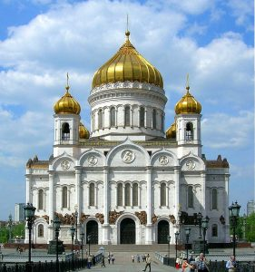
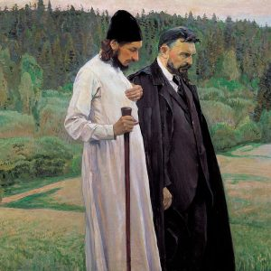
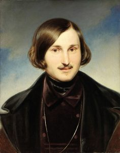

The following is the first part in a two-part installment.
This article is an attempt to highlight and reflect on several interrelated issues that seem to be very important in terms of working out a relevant theological approach to the wide variety of artistic expression, particularly as far as theoretical aesthetics is concerned. I shall focus on some most characteristic ideas developed in 20th century Russian religious philosophy that may appear to be significant not only for the Orthodox tradition of spirituality and thought in which they are rooted, but for other Christian traditions as well.
As for the Russian Orthodoxy, it should be pointed out from the very outset that the relationships between theology and art have always been rather uneasy, and in fact confined to the theology of church arts, icons in particular. Based on the teachings of the Saint Fathers, the Russian Orthodox tradition has always been extremely rich in artistic creativity within the sphere of church arts; however, up to the present moment it has been quite reluctant in acknowledging deep spiritual dimensions of secular arts. There were, of course, many attempts towards religious evaluation of literature, painting, music or poetry, but the gap between “sacred” and “secular” art has always been present and articulated by the Church.
I would not say, however, that it is typical of the tradition as such; rather, it was historically and, in some cases, spiritually determined, inasmuch as the primary concern of the Church is to keep people away from the temptations of the flawed world. The tradition, however dominated by certain prescribed norms or rules, is an “open system,” and its evolution is characterized by a dialectic of the canonical and the heuristic principles, the static and the dynamic. In Russia, it was not until the beginning of the 20th century that the theoretical heritage of Orthodox iconology started being philosophically and aesthetically deepened and in some ways reassessed in the works of a number of prominent thinkers, so that it became possible to consider the challenge of overcoming the traditional gap between “religious” and “non-religious” spheres of creativity by means of developing a fundamental theoretical basis for the interpretation of art. In the present-day Russia, with the growing interest in theological evaluation of art and literature, this is one of the most crucial issues, as well as it has been in the West.
The following observations, though covering just a few general and purely theoretical points, might provide, I hope, an outline of what could be called iconological thought in Russian religious aesthetics, how I view it, both rooted in and different (in terms of subject and treatment) from what is known as the theology of Icon.
I. Image/Icon as a Category of Religious Consciousness
This is something that would, perhaps, seem quite natural to Western thought, whereas, for some reason, it is not a common way of reflecting upon the icon in Russia. In fact, the image has always been one of the central categories of Orthodox religious consciousness, a category linking together theology, aesthetics and anthropology. The concept of the divine image that constituted the basis of understanding personal relationship between God and man was, at the same time, the major idea underlying patristic iconology: an icon is always an expression of the divine image as an ontological reality present in human nature.
However, the question arises: how is such an expression possible? From the very beginning, the image (eikwn) has, therefore, two inseparable dimensions: ontological and epistemological, i.e. the nature of the image as revelation of the divine is accounted for by the fact that it is an immanent structure, or category, of consciousness; and vice versa: cognition and experience of the divine through the image is possible only because its ontological nature is asserted. It was precisely the categorical aspect of the image that Fr. Pavel Florensky, one of the greatest Russian religious thinkers, stressed in his lectures on Religion and Culture in the 1920’s[1].
Before we have an icon as a particular work of religious art, there must be something that would function as the principle, or condition, of the possibility of any artistic expression, i.e. an all-embracing category of consciousness providing for true cognition and experience of the world, man and God. The image could be called a model, if this notion were not associated with particular trends in 20th century philosophy and semiotics. Rather, I would emphasize its immanence to the human consciousness, i.e. its being a living entity.
The abstract character of the image as a category does not prevent it from being understood as something live, for the abstract is but constituted by things taken in their ultimate characteristic as being. The image as a category is the same as a concrete image we see in the world, say, a poetic image, but taken as an ultimately possible and therefore fundamental entity. Thus, the image, or icon (not in its semiotic understanding, but in the understanding that logically follows from religious iconology), is an entity characterizing the way of human existence as expression and as comprehension of the substance, or essence, through expression.
The framework of thought that I am trying to articulate is, I think, more clearly observed in some works of Fr. Sergei Bulgakov, Ivan Ilyin and Alexei Losev. In the case of Bulgakov, it is interesting to notice his thought about artistic creativity moving within the ontological structure of Orthodox iconology: according to Bulgakov, as he puts it in his most comprehensive theological work The Unevening Light, the artist does not create images, but sees, hears, feels them as the only adequate embodiments of the substance; he does not invent them, but hearkens and contemplates the ultimate reality of things, and then naturally gives appropriate material form to what he has comprehended[2].
Ilyin often writes in similar terms: a poetic image is always a revelation of what he calls “the Principal, the Predicate, the Object,” of something that is being “spoken unto” the artist. Ilyin deals with the structure of the aesthetic form in his work Principles of the Poetic. On Perfection in Art, which can be regarded as his aesthetic manifesto and as one of the most important critical pieces. The image, according to Ilyin, seems to be an entity lying between two realities: the material embodiment, or the “aesthetic matter,” and the “texture of the world.”
The “aesthetic matter” is the most superficial, physically perceptible layer of a poetic work which should be governed, shaped and lightened by the power of imagination, the power of images lying inside the form. The “texture of the world” (one of Ilyin’s favourite and most characteristic expressions) is what constitutes the basis, the core of a poetic work, the reality which is disclosed in the depth of creative experience, i.e. being which is revealed to the artist in contemplation, the ultimate essence of the world seen from this world.
The poet is capable of penetrating into the “texture of the world” and grasping substantial “fragments” of it. It is precisely this fragment of the “texture” which has been grasped and comprehended by the artist in contemplation that Ilyin calls the “poetic object.” Among the variety of such substantial “fragments,” which, if not poetically experienced, can only be defined by abstract notions, he mentions, for instance, “divinity,” “perfection,” “sacredness,” “purity,” “serenity,” “light,” but also “torment,” “longing,” “suffering,” “darkness” etc. – he refers to all these realities as _________, objective “circumstances” revealing the ontological status and the existential state of the world. The “poetic object,” thus, is what shines through the whole form, naturally and organically framing all the constituents of a work of art, finding its first, condensed aesthetic expression in images and then properly shaping the “aesthetic matter.”
The eye and the mind of the reader, listener or spectator should penetrate through the “aesthetic matter” into the realm of images and through images, as the “true clothes” of the “Principal,” to the “poetic object”[3]. This “vertical” model of the aesthetic form, however simple and straightforward it might seem, rests on the basic iconological principle of expression as revelation and experience of the transcendental substance. In Ilyin, we also find a very interesting approach to the very concept of contemplation, which I shall look at later on.
Losev also views the image iconologically, i.e. as a reality through which we can perceive the essence of things, partake of it. The essence of things, according to Losev, is their being lightened and sustained by the energies of God. The task of man is to realize himself and the world as being lightened, penetrated and sustained by the divine energies, and thus to reveal the divine image in himself and in the world[4].
One of the ways to come to such realization seems to be, though not straightforwardly asserted by Losev, through creative activity in which man forms and perceives images containing, as it were, the “ontological picture” of the reality (I am deliberately alluding to the paradigm found in some Fathers, particularly in St. Theodore of Studios[5], to underline the iconological context of Losev’s thought, which is far less evident than in Ilyin), i.e. showing to what extent the beauty and glory of God penetrate the phenomena of the world, including human personality.
Clearly, there is also Hesychast tradition present here, especially in early Losev. It does not mean, however, that creativity can be viewed as a way to salvation (as it was suggested once by Nikolai Berdiaev), just as a work of art, though understood iconologically, cannot substitute for an icon used for prayer. Yet, the aesthetic dimension immanent to the human way of existence proves to be an important and helpful sphere of religious experience, since it provides for a special kind of “spiritual enjoyment,” as put by Victor Bychkov, Losev’s pupil and contemporary specialist in Byzantine and Russian Orthodox aesthetics.
I would like now to return to Fr. Pavel Florensky, whom I mentioned in the beginning, to exemplify the way in which categorical understanding of the image/icon can be used in interpreting various works of art, and to sketch some rather problematic issues in Florensky’s theological aesthetics (for it really can be called so). In his Iconostasis Florensky introduced the trichotomy eidos – face – mask (in Russian lik – litso – lichina; perhaps, it could be translated, following the corresponding Greek terms, as eidos – hypostasis – prosopon, where hypostasis stands for “phenomenon,” according to its use by some Fathers, and prosopon is understood negatively, as larva, or “mask”) to be applied to aesthetic phenomena with the aim of distinguishing between various degrees of manifestation of the ontological, i.e. the divine, in them. Eidos and mask (prosopon) form, as it were, two aesthetic poles: positive, deep, ontological and negative, superficial, meonic (from ìh on – “non-existing”); face, or hypostasis, i.e. aesthetic reality constructed in a particular work of art, may be situated, therefore, somewhere in the space between these two poles, so that its character, or nature, is accounted for by its position in relation to the stated poles.
In other words, we can speak of an aesthetic face either as approximating eidos or as approximating prosopon. In the first case the divine is presented in the work of art in such a way that it can be perceived as fully and flawlessly as it is possible under the present condition of the world; in the second case the divine is either poorly revealed or distorted by the artist, or remains totally hidden and imperceptible under the layers of psychological subjectivity and physical sensuality.
The ideal state of an aesthetic face can be observed in church art, particularly in some icons that convey the divine image in Christ, the Most Holy Theotokos and saints with all possible fullness; that is why these images are called in Russian liki – eida. The more “psychological” the artistic work is, the more it is plunged into the life of the sinful world, the more it has to do with the passions of human nature – the less ontological, the less graceful, the less revealing it becomes, up to the state when it is completely deceptive, demonic, empty inside, as in the case of the statues or masks of pagan gods[6].
It is clear that 1) Florensky’s trichotomy, if applied straightforwardly, stays within the opposition between “sacred” and “secular” art, and that 2) it works on the basis of a preelaborated hierarchy of aesthetic phenomena. The first point becomes problematic when it comes to the evaluation of “non-religious” and “non-traditional” works of art, which are viewed as “windows” into the world, unlike icons that are “windows” into heaven.
The second point in fact articulates the ground for Florensky’s most severe criticism of Western art, particularly after the Renaissance. For instance, in his famous work The Inverse Perspective Florensky first expressed the idea that the kind of perspective in painting is the decisive criterion of its place in the aesthetic hierarchy described above, along with some other elements mainly concerning composition and colour[7].
The verdict on the Western tradition in art, however, is what objective thought would hardly tolerate, in spite of the fact that Florensky’s phenomenology is very deep and theoretically productive. On the other hand, the way in which Florensky approached particular works of art was marked by many subjective features, and it could certainly be modified. The above-mentioned trichotomy seems to be precisely the sort of framework that allows to eliminate the strict opposition between “church” and “secular” art (whatever the terminology might be). As for the hierarchy of artistic phenomena, this is something that cannot be ignored, but should be developed in such a way as to meet the need for interpreting the existing variety of artistic works, both with respect to tradition and to the novel.
I have applied Florensky’s trichotomy in my interpretations of several works of Russian literature by suggesting, for instance, an iconological reading of Alexander Pushkin’s poem The Prophet and Nikolai Gogol’s short novel The Portrait. In Pushkin’s poem, the image of the Prophet becomes a symbolic metaphor of poetic creativity seen as a result of Divine inspiration.
Pushkin clearly follows the initially “romantic” paradigm (found, for example, in Blake and Coleridge), but eventually transcends and transforms it in accordance with the tradition of iconological aesthetics, so that the transfiguration of the Prophet described in the poem looks as a gradual disclosure of the eidetic substance of the human being, the “face” of the Prophet acquiring the status of an eidos, or lik.
In Gogol’s The Portrait, on the contrary, we come across a diametrically opposite phenomenon. The horrible portrait of a demonic money-lender symbolizing evil, destructive forces mystically affects the mind of the main character, the painter Chartkov, whose personality undergoes a series of transformations inevitably and irrevocably desubstantializing his true self, so that the “face” of the protagonist turns into a mask (lichina) concealing infernal, meonic emptiness, that of graceless despair and spiritual death[8].
I shall now pass on to another issue which will help to develop the theme started in the beginning, somewhat clarifying it, and, hopefully, will provide an appropriate standpoint for further reflections.
Oleg Komkov -PhD (Comparative Culture) – is Associate Professor at the Department of Comparative Literature and Culture, Faculty of Foreign Languages and Area Studies, Lomonosov Moscow State University. He is the author of over 50 articles and several books (mostly in Russian). He specializes in cultural theory, philosophical hermeneutics and theological anthropology, with interests in Byzantine iconology and the religious themes in Western and Russian literature and criticism.
[1] See: Флоренский П.А. Сочинения. В 4 т. М., 1994-1999. Т. 3 (1). С. 480 (Florensky, Pavel. Selected Works (in4 volumes). Moscow, 1994-1999. Vol. 3 (1). P. 480).
[2] See: Булгаков С.Н. Свет невечерний: Созерцания и умозрения. М., 1994. C. 242 (Bulgakov, Sergei. The Unevening Light: Contemplations and meditations. Moscow, 1994. P. 242).
[3] See: Ильин И.А. Основы художества. О совершенном в искусстве // Ильин И.А. Собрание сочинений: В 10т. М., 1994-1999. Т.6. Кн. 1. С. 123-206 (Ilyin, Ivan. Principles of the Poetic. On Perfection in Art. In: Ilyin, Ivan. Selected Works (in 10 volumes). Moscow, 1994-1999. Vol. 6. Book 1. P. 123-206).
[4] See: Лосев А.Ф. Личность и Абсолют. М., 1999. С. 249-267 (Losev, Alexei. The Person and the Absolute. Moscow, 1999. P. 235-267).
[5] See: Бычков В.В. 2000 лет христианской культуры sub specie aesthetica. В 2-х тт. Т. 1. Раннее христианство. Византия. М.-СПб., 1999. С. 462-468 (особенно 465-466 и 468) (Bychkov, Victor. 2000 Years of Christian Culture sub specie aesthetica. In 2 volumes. Vol. 1. Early Christianity. Byzantium. Moscow – St.- Petersburg, 1999. P. 462-468 (particularly 465-466 and 468)).
[6] See: Флоренский П.А. Иконостас // Флоренский П.А. Сочинения. В 4 т. Т. 2. С. 433-435 (Florensky, Pavel. Iconostasis. In: Florensky, Pavel. Selected Works (in 4 volumes). Vol. 2. P. 433-435).
[7] See: Флоренский П.А. Обратная перспектива // Флоренский П.А. Сочинения. В 4 т. Т. 3 (1). С. 48-96 (Florensky, Pavel. The Inverse Perspective. In: Florensky, Pavel. Selected Works (in 4 volumes). Vol. 3 (1). P. 48-96).
[8] See: Комков О.А. «Пророк» Пушкина как икона // Вестник МГУ. Серия 19. Лингвистика и межкультурная коммуникация. 2000. № 3. С. 73-86 (Komkov, Oleg. The Prophet by Pushkin as an Icon. In: Moscow State University Bulletin. Linguistics and Intercultural Communication. 2000 (3). P. 73-86); Комков О.А. Категория личины и инфернальная эстетика в повести Н.В. Гоголя «Портрет» // Вестник МГУ. Серия 19. Лингвистика и межкультурная коммуникация. 2001. № 3. С. 30-46 (Komkov, Oleg. The Category of Mask and Infernal Aesthetics in Gogol’s The Portrait. In: Moscow State University Bulletin. Linguistics and Intercultural Communication. 2001 (3). P. 30-46).